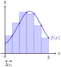

Remark 4.1.1. Review: Univariate Integrals as Riemann Sums.
For a continuous function \(f\colon [a,b] \to \R\text{,}\) the definite integral
\begin{equation*}
\int_a^b f(x) \, dx
\end{equation*}
measures the signed area enclosed between the graph of \(f\) and the \(x\)-axis. It is defined as the limit of Riemann sums: subdivide \([a,b]\) into \(n\) sub-intervals of equal length \(\Delta x_i = \tfrac{b-a}{n}\text{,}\) choose a representative point \(x_i\) in each sub-interval, and sum the rectangle areas:
\begin{equation*}
\sum_{i=1}^n f(x_i)\,\Delta x_i
\;\xrightarrow{\;n \to \infty\;}\;
\int_a^b f(x) \, dx.
\end{equation*}
Each term \(f(x_i)\,\Delta x_i\) is the area of a thin rectangle of height \(f(x_i)\) and width \(\Delta x_i\text{.}\) As the subdivision is refined, the approximation converges to the exact integral.
